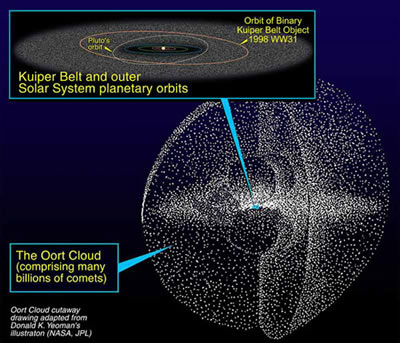
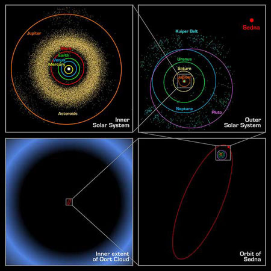

Yet to be directly observed, the Oort cloud is a spherical distribution of icy bodies presumed to exist in the far reaches of the Solar System. It was first postulated in 1950 by Jan Hendrik Oort after he noted that observed comets had the following in common:

Credit: NASA/JPL/Yeomans
- Their orbits indicated that they did not originate in interstellar space,
- They came from all directions – there was no preferred angle of orbital inclination,
- Their aphelia tended to group at about 50,000 AU.
Based on these observations, and taking into account the number of visible comets and the frequency with which they appeared, Oort concluded that billions of potential cometary nuclei must exist in a spherical shell surrounding the Solar System. Then, given their distance from the Sun, gravitational perturbations from objects outside the Solar System could knock these nuclei into plunging orbits around the Sun resulting in the observed comets.
These days, the (still hypothetical) Oort cloud is generally acknowledged as the origin of long-period comets (short-period comets appear to originate in the Kuiper Belt). It is thought to extend from about 20,000 to 100,000 AU, with the number of objects peaking around 44,000 AU. At these distances, gravitational perturbations from passing stars or molecular clouds, or tidal forces from the disk and bulge of the Milky Way can be sufficient to dislodge an object from the Oort cloud and start it on a highly elliptical orbit around the Sun.

Credit: NASA/JPL
Recent work on the model for the Oort cloud, and the discovery in 2004 of the planet-like object, Sedna, have suggested that the Oort cloud could have an inner extension that is more concentrated in the plane of the ecliptic and ultimately merges with the Kuiper Belt. Sedna was discovered beyond the sharply defined outer edge of the classical Kuiper Belt and close to its perihelion distance of 76 AU. This means it cannot be a Kuiper Belt Object. At the same time, however, its 10,000 year orbit takes it out to only around 990 AU at aphelion which is well inside the proposed inner edge of the Oort cloud. Hence it cannot be a classical Oort cloud object. It could, however, be a member of an ‘inner Oort cloud’, a population of bodies trapped between the Kuiper Belt and classical Oort cloud.
Their large distances from the Sun indicate that the objects in the Oort cloud could not have formed in situ, since the material in the solar nebula would have been too sparse to condense. They most likely formed near the gas giant planets and were ejected into the Oort cloud through gravitational interactions with these much larger bodies. This would also account for the different compositions of long-period comets, as we would expect those that formed close to Jupiter to have a different composition to those that formed closer to Neptune.
Although the numbers vary widely, Oort’s estimate that the Oort cloud contains billions of objects remains valid, and even numbers in the trillions have been suggested. Even so, the amount of material contained in the Oort cloud is thought to be fairly small (of the order of tens of Earth masses) since the majority of the objects are expected to be small (measured cometary nuclei have diameters of ~20 km or less) and the distances between them on the order of tens of millions of kilometres.